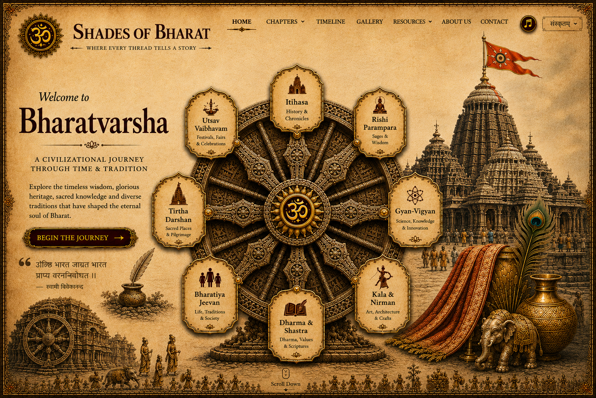

Shades of Bharat
Home
Chapters
Timeline
Gallery
Resources
About
Contact
Languages
Explore Bharatvarsha
Begin the Journey
Itihasa
Utsav Vaibhavam
Rishi Parampara
Tirtha Darshan
Gyan-Vigyan
Bharatiya Jeevan
Dharma and Shastra
Kala and Nirman
Explore temples and sacred places